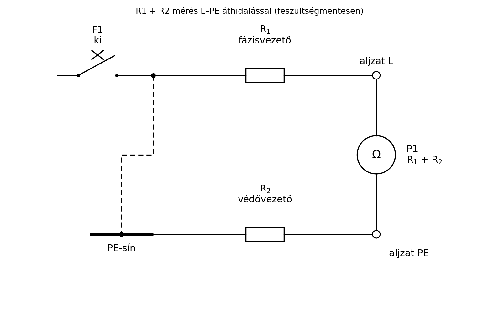

![Három panel. (b) 4-pólusú mérés: a földelésmérő E és ES kapcsa két külön zsinórral ugyanarra a földelőre csatlakozik a vizsgálókapocsnál, az S szonda a távolság 62 %-ánál, a H szonda a végén. (c) Szelektív mérés: épület két levezetővel és földelővel; a vizsgált levezetőn lakatfogó, a műszer E kapcsa a levezetőre, S és H szonda a talajban, a vizsgálókapcsot nem bontják. (d) Két lakatfogós mérés: öt párhuzamos földelő közös összekötővel, a vizsgált R_x levezetőn két fogó; a hurok a többi földelőn át záródik; R_mért = R_x + (R_1 ∥ R_2 ∥ … ∥ R_n).](figures/img/ve086-5.png)
Statikus változat (mint a PDF-ben)
Egy lakáselosztó cseréje vagy egy új dugaszoló aljzat-kör kiépítése után a megrendelő joggal kérdezheti: „Most már biztos, hogy nem ráz meg, és nem gyullad ki?” A szemrevételezés – amelyet a Szemrevételezés, működési próbák, kikapcsolt állapotú vizsgálat alfejezetben tanultál – sokat elárul, de a biztonságot csak méréssel lehet igazolni. Ebben az alfejezetben három olyan mérést veszünk alaposan: a védővezető folytonosságát, a szigetelési ellenállást és a földelési ellenállást. Ezek a mérések az ellenőrző protokoll gerincét adják, és a szabványossági felülvizsgálat során mindig előkerülnek. A mérési eredményeket a későbbi Mérések II.: hurokimpedancia, zárlati áram, FI-vizsgálat alfejezetben használjuk fel, és a jegyzőkönyvbe kerülnek.
Mielőtt a részletekbe megyünk, érdemes a három mérést egy-egy egyszerű kérdéshez kötni:
| Mérés | Kérdés, amire válaszol |
|---|---|
| Védővezető-folytonosság | A védővezető mindenhol megszakítás nélkül, kis ellenállással össze van kötve a fő földelőkapoccsal? |
| Szigetelési ellenállás | A szigetelés nem enged-e veszélyes szivárgó áramot az aktív vezetőkről a föld felé vagy a vezetők között? |
| Földelési ellenállás | A földelő képes-e a hibaáramot a földbe vezetni anélkül, hogy veszélyes érintési feszültség alakulna ki? |
A sorrend sem véletlen: előbb a védővezető épségét igazoljuk, mert ha az hiányzik, a többi mérés és maga a hibavédelem is értelmét veszti. Ezután mérjük a szigetelést, hogy kizárjuk a közvetlen földzárlatot vagy vezető közti rövidzárlatot, végül a földelő ellenállását, hogy a föld felé vezető utolsó láncszem is megfelelő legyen.
Definíció. A védővezető folytonossága azt jelenti, hogy a védővezető (PE) a védett berendezés minden érinthető, vezetőképes részétől a fő földelőkapocsig vagy a földelőcsatlakozásig megszakítás nélkül, kis ellenállással vezető útként áll rendelkezésre.
A mérés célja nem csupán az, hogy „van-e vezetés”, hanem az is, hogy a kötés megbízhatóan kis ellenállású legyen. Egy laza, korrodált vagy alulméretezett kötés kis árammal még vezethet, de nagy hibaáram esetén felmelegedhet, eléghet, vagy éppen leoldási hibát okozhat. Ezért a szabvány a mérőáramra legalább 200 mA egyenáramot vagy váltakozó áramot ír elő a folytonosságmérő műszerre (ellenőrizendő: a hatályos MSZ EN 61557-4 pontosan). A gyakorlatban a védővezető-folytonosság mérőműszerek ennél nagyobb áramot is adhatnak, de soha ne használjunk egyszerű multiméter ellenállásmérését, mert az csak néhány mA árammal mér, és nem mutatja ki a rossz kötéseket.
Szabály. A védővezető-folytonosság mérését mindig feszültségmentes, leválasztott állapotban kell elvégezni. A mérési eredményt mindig hasonlítsuk össze a vezető elméleti ellenállásával, amely a hosszból, a keresztmetszetből és az anyag fajlagos ellenállásából számítható.
Recept – védővezető-folytonosság mérése:
A recept 2–4. lépésének bekötését az alábbi ábra mutatja. Az (a) részen a két mérőcsúcsot összeérintjük, és a NULL gombbal levonjuk a zsinórok ellenállását (1, 2). A (b) részen az egyik zsinór krokodilcsipesszel a fő földelőkapocsra (EPH-sín, 3) csatlakozik, a másik – kábeldobról letekert hosszabbító zsinórral (4) – a távoli aljzat PE-érintkezőjét éri el (5, 6). A mért 0,23 Ω jól egyezik a feladatgyűjteménybeli (24.2) példában számított 0,21 Ω-mal. A (c) rész a műszerválasztást foglalja össze.
Tipikus hiba, hogy csak a rövid zsinórokat nullázzák, a hosszabbítót nem: a 20–30 m-es zsinór ellenállása több tized ohm is lehet, ami egy jó kötést is gyanúsnak mutat. A HTML-kiadásban a nullázás és a mérés lépésenként lejátszható.
Számítás. Ha ismerjük a védővezető anyagát, hosszát és keresztmetszetét, az elméleti ellenállást az Ohm-törvény anyagi alakjából számítjuk:
ahol a fajlagos ellenállás, rézre (20 °C-on), a vezető hossza, a keresztmetszete.
Fő EPH. A fő EPH-sín és a víz-, gáz-, fűtéscső bilincse, a fém kád vagy zuhanytálca, illetve az épületszerkezet bekötött pontja között mérünk. Elfogadás: minden előírt kötés megvan, és kis ellenállású; rövid szakaszon tájékoztató irányérték (ellenőrizendő).
Kiegészítő EPH. Ha a kioldási idő nem teljesíthető, vagy a szabvány kiegészítő EPH-t ír elő, az egyidejűleg érinthető vezető részek közötti ellenállásnak teljesítenie kell (ellenőrizendő: MSZ HD 60364-4-41):
Tanulság: kismegszakítós kioldásnál a kiegészítő EPH ellenállásának nagyon kicsinek kell lennie.
L–PE áthidalásos mérés (). Egy mérés megmutatja a PE folytonosságát, a hurok vezetékrészének ellenállását és a polaritást is (Polaritásvizsgálat).

Számítás. 2,5 mm² L és PE, 20 m: . 1,5 mm², 25 m: . A hurokimpedancia ebből becsülhető: ; üzemi hőmérsékleten a vezeték ellenállása kb. 1,2-szeres (ellenőrizendő). Ezzel a Mérések II.: hurokimpedancia, zárlati áram, FI-vizsgálat mért értékét lehet keresztellenőrizni.
Definíció. A szigetelési ellenállás az aktív vezetők (fázis, nulla) és a föld, valamint az aktív vezetők egymás közötti szigetelésének egyenfeszültséggel mért ellenállása. A mérés azt igazolja, hogy a szigetelésben nincs olyan hiba, amely veszélyes áramot engedne át.
A méréshez szigetelésmérő műszert (a régi márkanévből köznyelven „megger”) használunk, amely egyenfeszültséget generál. A vizsgálófeszültséget a berendezés névleges feszültsége alapján választjuk meg:
| Áramkör | Vizsgálófeszültség | Legkisebb szigetelési ellenállás |
|---|---|---|
| SELV/PELV | DC | |
| legfeljebb névleges feszültség () | DC | |
| felett | DC |
(Ellenőrizendő: a hatályos MSZ HD 60364-6 táblázata és a műszergyártói adatlapok pontos előírása.)
Szabvány. Az MSZ HD 60364-6 (kisfeszültségű villamos berendezések ellenőrzése) szerint a szigetelési ellenállás mért értékét a gyártói útmutató és a berendezés jellege szerint kell értékelni. Az elfogadási határérték a vizsgálófeszültséghez kötött (lásd a fenti táblázatot): a 230/400 V-os áramköröknél legalább 1 MΩ, SELV/PELV-nél 0,5 MΩ (ellenőrizendő: az aktuális szabványkiadás szerint). Új, egészséges áramköröknél a mért érték jellemzően több száz MΩ, ezért az 1 MΩ alatti érték (230/400 V-nál) mindenképpen hibára utal.
A szigetelési ellenállás mérése kényesebb, mint a folytonosságmérés, mert a vizsgálófeszültség károsíthatja az elektronikus fogyasztókat. Ezért:
Szabály. A szigetelési ellenállás mérése előtt a vizsgált áramkörről le kell választani, illetve ki kell kötni minden olyan fogyasztót, amely félvezetőket, kapcsolóüzemű tápegységet, dimmert, LED-hajtást, szünetmentes tápegységet vagy túlfeszültség-védő eszközt (SPD-t) tartalmaz. Ha ez nem lehetséges, a gyártó előírása szerint csökkenteni kell a mérési feszültséget, vagy a mérést más módszerrel kell elvégezni. A fogyasztók leválasztását mindig a mérés előtt, feszültségmentes állapotban végezzük el.
A mérés menete:
Recept – szigetelési ellenállás mérése:
Az alábbi ábra egy áramkör szigetelésmérésének előkészítését és bekötését mutatja az elosztóban. A kör kismegszakítója kikapcsolva és lezárva (1), a túlfeszültség-védő betétje kivéve (2). Az N–PE méréshez a kör N-jét is le kell választani a többi körről: itt az N-szakaszoló kapocs nyitva van (3), különben a betáplálás N–PE kötését vagy más körök hibáját is mérnénk. A mérőzsinórok a kör kimenő kapcsaira (4) csatlakoznak. A kör túlsó végén a recept 2. lépése látható: a kapcsoló bekapcsolva (5), a fényforrás kivéve (6), a dugó kihúzva (7), a LED-tápegység kikötve (8). A rajz az első, L–PE mérést mutatja.
Mérés közben a kör minden pontján – a távoli aljzatokban és lámpahelyeken is – 500 V DC van, ezért a zsinórvégeket és a kapcsokat ne érintsd, és a mérés után mindig várd meg a kisütést. A HTML-kiadásban a négy lépés (L–PE, N–PE, L–N, kisütés) egymás után lejátszható.
Számítás. A szigetelési ellenállás mérésénél a mért érték gyakran nem egyetlen szigetelési hiba, hanem több párhuzamos szivárgási út eredője. Ha például két párhuzamos áramkör szigetelési ellenállása és , az eredő:
A mért értéket a kábelhossz és a hőmérséklet is befolyásolja: hosszabb és melegebb kábelen kisebb szigetelési ellenállást kapsz (számpélda: Szigetelőanyagok és műanyagok, 3. példa), ezért az eredményeket hasonló körülmények között hasonlítsd össze.
Ez az érték még az 1 MΩ határ felett van. Az eredő akkor esik 1 MΩ alá, ha a rosszabbik szakasz kb. alá csökken (). Mivel az eredőt mindig a leggyengébb szakasz határozza meg, egy jó szakasz nem „javítja fel” a rosszat: a -os szakasz már a hiba előjele lehet, ezért a gyenge pontokat szakaszonként kell felkutatni, nem szabad megelégedni az összesített értékkel.
Az eddigi recept egyfázisú kört mért. Háromfázisú leágazásnál (tűzhely, motor, alelosztó-betáplálás) több vezető van, ezért előre tudnod kell, hány és milyen vezetőpárt mérsz, és mit derít ki egy-egy mérés.
| Kör | Mérések | Mit derít ki |
|---|---|---|
| egyfázisú (L, N, PE) | L–N, L–PE, N–PE (3 mérés) | L–PE: földzárlat; N–PE: N–PE átvezetés (pl. beázás); L–N: erek közti szigetelés |
| egyfázisú, egyszerűsítve | L+N összekötve – PE (1 mérés) | ha az L–N mérés a bekötve maradt fogyasztók miatt nem végezhető; az L–N szigetelést így nem vizsgálja |
| háromfázisú öteres (L1, L2, L3, N, PE) | L1–L2, L2–L3, L3–L1 | erek közti szigetelés, pl. préselt, megtört kábel |
| L1–N, L2–N, L3–N | szigetelés az N felé | |
| L1–PE, L2–PE, L3–PE, N–PE | földzárlat, szigetelés a test felé (összesen 10 mérés) | |
| háromfázisú, egyszerűsítve | (L1+L2+L3+N) – PE, majd fázisonként a többihez képest | gyors szűrés; hibánál a teljes 10-es sorra kell áttérni |
(ellenőrizendő: MSZ HD 60364-6, a megengedett egyszerűsítések)
A rajzon a műszer egyszerre mindig csak egy vezetőpárt mér, a többi vezető szabadon marad. Az interaktív változatban a tíz kombináció egyenként kiválasztható; figyeld meg, melyik szigetelési út kerül a műszer két zsinórja közé.
A teljes elosztó gyors mérése. A főkapcsoló kikapcsolva, minden kismegszakító bekapcsolva, a fogyasztók és az SPD leválasztva, az N-sín a betáplálás felőli N-től leválasztva. Ekkor az összes fázis és az N összekötve mérhető a PE-hez képest. Szabály: a párhuzamos szivárgási utak eredője kisebb vagy egyenlő a legkisebb egyedi értékkel, ezért ha az együttes érték eléri a határértéket, akkor minden egyes kör is megfelel. Ha nem, a köröket felezéssel kell behatárolni: a kismegszakítók felét kikapcsolod, újra mérsz, és a hibás felet tovább felezed, amíg a hibás kör meg nem van.
Definíció. A földelési ellenállás a földelő (földelőszonda, alapföldelő, szalagföldelő) és a „távoli föld” közötti villamos ellenállás. A távoli föld az a pont, ahol a földelő árama már nem okoz számottevő feszültségemelkedést a talajban. A mérés üres jegyzőkönyvlapja: Nyomtatható jegyzőkönyvek és sablonok, A5.
A mérés célja annak igazolása, hogy a földelő a hibaáramot a földbe tudja vezetni anélkül, hogy a földelőn vagy annak környezetében veszélyes érintési feszültség alakulna ki. A földelési ellenállást tehát mindig a hibavédelem követelményével együtt kell értékelni, amint azt a Földelők és földelési ellenállás alfejezetben láttad.
A földelési ellenállás mérésére négy módszert alkalmazunk (a négypólusú és a szelektív a hárompontos változata):
1. Hárompontos (potenciálesés) módszer. A mért földelő (E) mellé két ideiglenes segédföldelőt ütünk le: egy áramszondát (C) és egy potenciálszondát (P). A műszer váltakozó áramot bocsát az E és C közötti hurokba, és méri az E és P közötti feszültséget. A földelési ellenállást az Ohm-törvényből számítjuk:
A szondákat úgy kell elhelyezni, hogy a potenciálszonda a földelő és az áramszonda közötti, közelítőleg 62% távolságra essen, és legalább a földelő méretének többszörösére legyen távol (ellenőrizendő: a gyártói és szabványi ajánlások). Ez a módszer nagy helyet igényel, ezért elsősorban kültéri, kiterjedt földelőknél használjuk.
Miért éppen 62 %? A földelő és az áramszonda körül is egy-egy potenciáltölcsér alakul ki. Ha a két tölcsér nem fed át, közöttük a talaj potenciálja alig változik, ezért a P-szonda helyzetétől függő mért ellenállásgörbének a 62 % körül sík szakasza van, és ott éppen a földelő ellenállását mérjük. Ha az áramszonda túl közel van, a tölcsérek átfednek, a görbe sehol sem sík, és a 62 %-os pont sem megbízható. Ezért a mérést úgy ellenőrizzük, hogy a P-szondát az E–C távolság kb. 10 %-ával előbbre és hátrébb is áthelyezzük: ha a három érték 5 %-on belül egyezik, az eredmény elfogadható, különben az E–C távolságot növelni kell (ellenőrizendő: a gyártói és szabványi ajánlások). Az alábbi ábra felül az elrendezést mutatja a feladatgyűjteménybeli (24.2) számpélda adataival (E–C = 40 m, P 25 m-nél), alul pedig a mért ellenállást a P-szonda helyzetének függvényében, 40 m-es (sík szakasz) és 10 m-es (átfedő tölcsérek) E–C távolságnál. Az interaktív változatban az E–C távolság és a P-szonda helyzete csúszkával állítható; a kijelző a mért ellenállást és a ±10 %-os áthelyezés eltérését mutatja.
2. Négypólusú (4 vezetékes) potenciálesés-mérés. A hárompontos mérés javított változata: a műszer E és ES kapcsa két külön zsinórral csatlakozik ugyanarra a földelőre (a vizsgálókapocs két oldalán vagy két csipesszel), az S (P) és a H (C) szonda ugyanúgy helyezkedik el, mint a hárompontos mérésnél. A műszer a feszültséget az ES-től méri, ezért az E-zsinór ellenállása és a csatlakozási átmeneti ellenállás nem adódik hozzá a mért értékhez. Kis (kb. alatti) értékeknél használjuk, például alapföldelő vagy villámvédelmi földelő mérésekor. Ez nem azonos a Wenner-módszerrel: a Wenner-elrendezés (négy, egy vonalban egyenlő távolságra levert tű, ) a talaj fajlagos ellenállását méri, nem egy meglévő földelő ellenállását – ezt a Földelők és földelési ellenállás alfejezet 3. kidolgozott példája mutatja be.
3. Szelektív mérés (3/4 pólus + lakatfogó). A vizsgálókapcsot nem kell bontani: a szondák a hárompontos mérés szerint állnak, a lakatfogó pedig csak a vizsgált földelő levezetőjét fogja körül. A műszer a fogón átfolyó áramrészből számolja a vizsgált földelő ellenállását. Akkor hasznos, ha több levezetős villámvédelemnél egyenként kell mérni, bontás nélkül.
4. Két lakatfogós (szonda nélküli) hurokmérés. Két fogó (egy gerjesztő és egy mérő) kerül ugyanarra a levezetőre; szonda nincs. A gerjesztett áram a vizsgált földelőn, a talajon és a többi, párhuzamos földelőn át záródik, ezért a műszer ezek soros eredőjét méri:
Számpélda: öt egyenként -os, összekötött földelő közül az egyiket mérjük: ; a valódi érték , a hiba . Ha csak két földelő van ( és ), (+100 %). Szabály: a módszer csak sok párhuzamos, kis eredőjű földelőnél pontos. Egyetlen földelőnél (TT-rendszerű családi ház) nincs zárt hurok, így nem mérhető; a mért érték pedig a hurok minden elemét (kötések, PEN) is tartalmazza (ellenőrizendő: a műszergyártó alkalmazási feltételei).
Az alábbi ábra a három kiegészítő módszer bekötését mutatja; a hárompontos mérést (a) a hárompontos terepi ábra szemlélteti.
Hasonlítsd össze a három panelt: hol kell bontani, hol kell szonda, és melyik mérésbe „lopódzik be” a többi földelő?
| Módszer | Bontás kell? | Szonda kell? | Mire való | Tipikus hibaforrás |
|---|---|---|---|---|
| 3-pólusú | igen | 2 (S, H) | egyedi földelő (TT családi ház) | szonda a földelő hatásterületén belül; nem bontott párhuzamos utak |
| 4-pólusú | igen | 2 (S, H) | kis értékű földelő (< 1 Ω) | mint a 3-pólusúnál; az E/ES felcserélése |
| szelektív (fogóval) | nem | 2 (S, H) | több levezetős villámvédelem, egyenként | a fogó nem csak a vizsgált levezetőt fogja |
| két lakatfogós | nem | nincs | sok párhuzamos, összekötött földelő | kevés párhuzamos földelő (+25…100 %), egyetlen földelőnél nem mér |
(ellenőrizendő: a műszerek alkalmazási feltételei)
A gyakori hurokimpedancia-mérés nem helyettesíti a közvetlen földelési ellenállás mérését; az a teljes hibahurok ellenállását méri, amellyel a Mérések II.: hurokimpedancia, zárlati áram, FI-vizsgálat alfejezetben foglalkozunk.
Számítás. Hárompontos mérésnél a műszer áramot bocsát a földelő és az áramszonda közé, és az E–P feszültség . A földelési ellenállás:
Ezt az értéket kell összevetni a védelmi követelménnyel. Például TT-rendszerben, ha a védelmet egy névleges kioldóáramú áram-védőkapcsoló biztosítja, akkor a földelési ellenállásra a következő feltételt kapjuk:
ahol a tartósan megengedett érintési feszültség, itt . Bár a fenti bőven megfelel, a gyakorlatban a földelőt mégis minél kisebbre méretezik, hogy a csatlakozó berendezések, túlfeszültség-védők és a villámvédelem is megbízhatóan működjenek. (Ellenőrizendő: az adott hálózati és védelmi előírások.)
A feladatgyűjteménybeli (24.2) számpélda a terepen így áll össze. Az alábbi ábrán a falon lévő vizsgálókapcsot (1) feszültségmentes, biztosított állapotban bontjuk, így a mért földelő (2) leválik az épület védőhálózatáról és a párhuzamos utakról. A földelésmérőt (3) 3 pólusú üzemmódba állítjuk; az E kapcsa krokodilcsipesszel a földelő felőli oldalra csatlakozik, a P és C zsinór kábeldobról (4) fut a 25 m-re levert P-szondához (5) és a 40 m-re levert C-szondához (6). Végül a P-szondát kb. 10 %-kal előbbre és hátrébb is áthelyezzük (7).
Ellenőrzési pont: a szondák egy vonalban legyenek, és a mérőzsinórok ne fussanak hosszan egymás mellett. A mérés után a vizsgálókapcsot vissza kell kötni és meg kell húzni – a bontva felejtett kapocs maga is hiba. A HTML-kiadásban a négy lépés (bontás, szondák, mérés, ellenőrzés) külön megjeleníthető. A terepi földelésmérést mért adatsorral, jegyzőkönyvbe írva a Védelmi mérések gyakorlata és a jegyzőkönyv kitöltése alfejezet, a rejtett hibák felkutatását a Hibakeresés épületvillamossági modelleken alfejezet gyakoroltatja.
A mérési eredmények csak akkor megbízhatók, ha a mérést helyesen, és a lehetséges hibákat kiküszöbölve végezzük. A leggyakoribb hibalehetőségek:
Párhuzamos hurkok. A földelési ellenállás mérésénél, ha a mért földelő párhuzamosan kapcsolódik más földelőkkel (például alapföldelő, közművezeték, acélszerkezet), a mérőáram egy része ezeken a párhuzamos utakon folyik. Emiatt a mért érték kisebb lesz, mint a tényleges földelő-ellenállás. Ha a mérés torzítását ki akarjuk zárni, a vizsgált földelőt időlegesen le kell választani a védőhálózatról, természetesen feszültségmentes állapotban. Ha a leválasztás nem lehetséges, a kisebb mért érték még mindig hasznos, mert a tényleges hibaáram is ezeken a párhuzamos utakon folyik, de ezt a jegyzőkönyvben fel kell tüntetni.
Mérőzsinór-ellenállás. A folytonosságmérésnél a mérőzsinórok saját ellenállása néhány tized ohmtól több ohmig terjedhet. Mindig nullázzuk a műszert a zsinórokkal együtt, vagy vonjuk le a zsinórellenállást a mért értékből.
Nem megfelelő mérőáram. Egyszerű multiméterrel nem mérhető megbízhatóan a védővezető folytonossága, mert a kis mérőáram nem mutatja ki a laza kötéseket. Csak megfelelő folytonosságmérőt () használjunk.
Elektronikai berendezések védelme. A szigetelésmérés vizsgálófeszültsége tönkreteheti a félvezetőket, kondenzátorokat, kapcsolóüzemű tápegységeket. Ezért minden ilyen fogyasztót le kell választani a mérés előtt. Különösen figyeljünk a beépített túlfeszültség-védőkre (SPD), amelyek a vizsgálófeszültségre is levezethetnek, és ezzel a szigetelési ellenállás mért értékét drasztikusan lecsökkenthetik. Az SPD-ket a mérés idejére ideiglenesen szakaszolni kell, ha a gyártó engedi, vagy a mérési feszültséget kell csökkenteni.
Egy lakóház bővítése során a szerelő új aljzatköröket épített ki, majd a szokásos ellenőrző mérést végezte. A folytonosságmérés minden ponton rendben volt, azonban a szigetelési ellenállás fázis–föld mérésnél csak -ot mutatott, ami az elvárt 1 MΩ alatt maradt. A szerelő először az új körökre gyanakodott, de amikor azokat szétválasztotta, a régi világítási áramkörön találta a hibát: egy süllyesztett kapcsolódobozban beázás miatt a szigetelés nedvessé vált, és a fázisvezető enyhén áthúzott a védővezető felé. A doboz és a szakasz cseréje után a mért érték lett. Tanulság: a mérési eredményt nem szabad félvállról venni: a nem megfelelő, és a határ közelében lévő (1–2 MΩ) érték is meghibásodás előjele lehet. A szakaszonkénti keresés tárta fel a valós okot.
Gyakorlás: ennek az alfejezetnek a kidolgozott példái, gyakorlatai és megoldással ellátott feladatai az Összefoglaló feladatgyűjtemény villanyszerelő tanulóknak című kötet 24.2 szakaszában találhatók.
A védővezető-folytonosság mérése azt igazolja, hogy a védővezető minden védett pontról a fő földelőkapocsig megszakítás nélkül, kis ellenállással vezet. A mérést legalább 200 mA mérőáramú folytonosságmérővel, feszültségmentes állapotban végezzük, és a mért értéket a vezető hosszából, keresztmetszetéből számított elméleti ellenállással hasonlítjuk össze. A szigetelési ellenállás mérésénél a hálózatnak megfelelő vizsgálófeszültséget (250/500/1000 V) alkalmazunk, az elektronikus fogyasztókat és SPD-ket leválasztjuk, és a mért értéket az 1 MΩ határhoz viszonyítjuk. A földelési ellenállás mérésére hárompontos, négypontos vagy lakatfogós módszert használunk, ügyelve a párhuzamos hurkok torzító hatására. Az eredményt mindig a védelmi feltétellel ellenőrizzük, például TT-rendszerben . A mérési eredményeket pontosan dokumentálni kell, mert ezeket a Mérések II.: hurokimpedancia, zárlati áram, FI-vizsgálat alfejezetben a további mérésekkel együtt értékeljük, és a jegyzőkönyvben összegezzük.
A szöveg a hazai MSZ HD 60364 és MSZ EN 61557 sorozatra támaszkodó gyakorlatot ismerteti, de az alábbi értékeket minden esetben ellenőrizni kell a hatályos szabványkiadásokban és a műszergyártói adatlapokban:
A pontos szakasz-, táblázat- és mellékletszámokat nem adtuk meg, mert azokat a kiadás előtt célzottan le kell ellenőrizni.